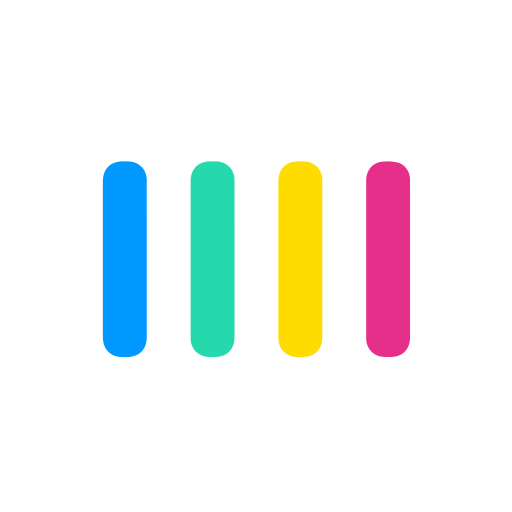
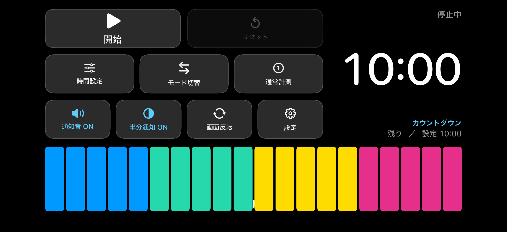

iPhone・ビジュアルバータイマー
Yokoku
残り時間を、横方向のバーで見る。数字を読んで計算する代わりに、目盛りの残量でひと目で残り時間がわかる、横画面専用のタイマーです。
App Store で近日公開
現在開発中です。公開まで、もうしばらくお待ちください。

バーは左端から減る
Yokoku 独自の仕様。目盛りの残量を見るだけで、数字を読んで計算しなくても「あとどれくらいか」がひと目でわかります。
数字とバーはズレない
残り時間の数字とビジュアルバーは、常に同じ状態から描かれます。表示のあいだで計算方法が変わることはありません。
省電力を最優先に設計
毎秒の描き直しや常時アニメーションは行いません。次に見た目が変わる瞬間だけ、表示を1回更新します。長時間点けっぱなしにしても電池に優しい設計です。
閉じていても知らせる
バックグラウンドに移っても、区切りと終了はローカル通知で知らせます。横画面専用（Landscape Left / Right 両対応）、通常計測とリピート計測（作業・休憩）に対応しています。